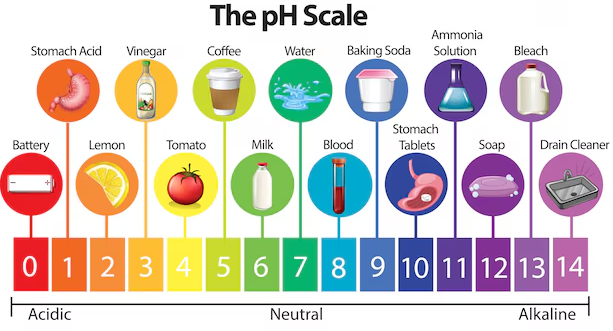

🍋 DESDE EL ZUMO DEL LIMÓN HASTA EL JABON

Ácidos y bases: Arrhenius, Lewis, Brönsted y Lowry
Los conceptos de ácido y base se conocían desde los albores de la química. Sustancias ácidas eran por ejemplo el limón, el vinagre, el aceite de vitriolo (ácido sulfúrico), en tanto que eran básicas el bicarbonato, la soda cáustica, la potasa.
Lavoisier, en 1777, identificó en forma errónea a los ácidos como compuestos que contenían oxígeno. Pero el inglés Davy, en 1810, concluyó, en forma más cercana a la realidad, que el hidrógeno en lugar del oxígeno era el componente fundamental de los ácidos. Desde entonces, los conceptos de ácido y base han evolucionado y se han propuesto varias definiciones al respecto.
Svante de Arrhenius propuso en 1884 una teoría de la disociación electrolítica, con la cual ganó el premio Nobel de Química de 1903, desarrollada más tarde por el químico alemán Wilhelm Ostwald (1853-1932). En concepto de Arrhenius, un ácido es una sustancia que en solución acuosa produce iones hidrógeno, H+, y una base es una sustancia que en solución acuosa produce iones hidróxido, OH.
Grupo Editorial Norma (Ed.). (1997). Maestra: Enciclopedia temática ilustrada. Grupo Editorial Norma.